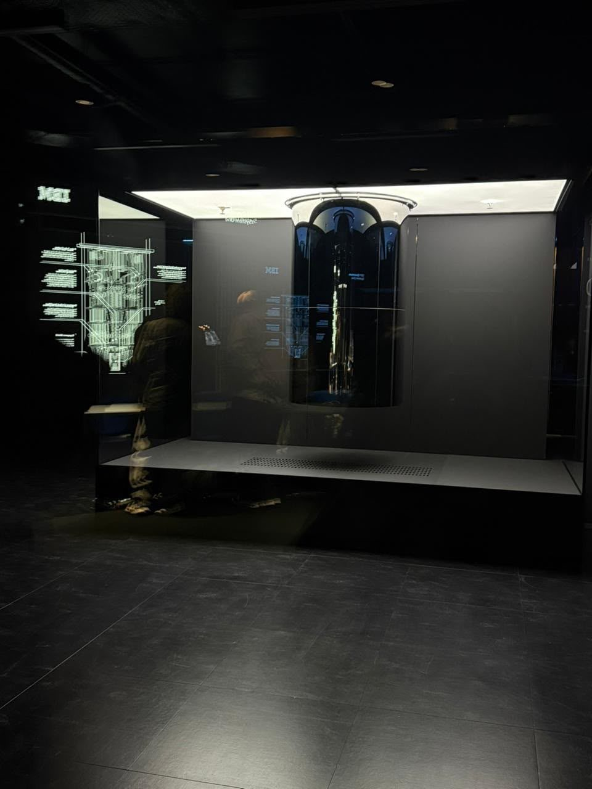

Estado del qubit
|0⟩
P(0)
P(1)
Circuito:
|0⟩ → medir
«Medir 100 veces» hace 100 corridas nuevas: cada una prepara |0⟩, aplica el circuito de arriba y mide. Así se ve la probabilidad.
Truco: reiniciá y apretá H dos veces. Volvés a |0⟩ y medir da siempre 0: las dos mitades de la onda se cancelan (interferencia). Una moneda común no puede hacer eso.
Resultados
|0⟩
0 –1 –
0 mediciones
Bit vs. qubit
Un bit es 0 o 1, como una moneda apoyada en la mesa. Un qubit puede estar en una mezcla de los dos, como una moneda girando en el aire.
Medir la decide
Cuando medís, la moneda «cae»: da 0 o 1 y se queda así. Por eso, si volvés a medir sin tocar nada, sale lo mismo.
¿Y para qué sirve?
Con muchos qubits y sus interferencias, las computadoras cuánticas de IBM atacan problemas que a las comunes les cuestan muchísimo, como simular moléculas.
IBM Quantum, de cerca · viaje 2026
